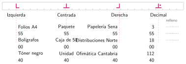

Tabulaciones
Criterios: 4a, 4c
🤔 Pienso10 min
Qué hago aquí: Piensa un momento y contesta con lo que ya sabes. No pasa nada si no lo sabes: es para empezar.
Mira el índice de un libro. ¿Cómo consiguen que todos los números de página queden alineados a la derecha, con puntitos?
📖 Leo y aprendo30 min
Qué hago aquí: Lee despacio, mira los dibujos y los ejemplos, y quédate con la idea clave del final.
Una tabulación es una posición fija en la regla a la que salta el cursor al pulsar

. Sirve para alinear datos en columnas sin tabla: listas de precios, índices, horarios, firmas.

Se ponen de dos formas:
- Con la regla: eliges el tipo en el botón de la esquina izquierda de la regla y haces clic en la posición. Para quitarla, se arrastra fuera de la regla.
- Con el cuadro Tabulaciones (Párrafo › botón Tabulaciones): escribes la posición exacta en centímetros, eliges la alineación y el relleno (puntos, guiones o línea) y pulsas Fijar.
✏️ Hago150 min
Qué hago aquí: Haz las actividades en orden. Empieza siempre por las básicas.
Qué tabulación usarías para: a) los números de página de un índice; b) unos precios con céntimos; c) un título en el centro de la línea; d) el nombre al principio de la línea.
Haz la lista de precios de la papelería: producto (izquierda, 1 cm), unidad (centrada, 7 cm) y precio (decimal, 13 cm, con relleno de puntos).
Escribe el índice de este libro (unidades 1 a 9) con los números de página alineados a la derecha en 15 cm y relleno de puntos.
Haz el horario del curso de formación de tu empresa con tabulaciones: hora, actividad, aula y ponente. Ponle título centrado y la fila de títulos en negrita.
Prepara la zona de firmas de un contrato: «El trabajador» a la izquierda y «La empresa» a la derecha, con una línea continua para firmar debajo de cada uno (relleno de línea).
🚀 Amplío (si quieres saber más)
Qué hago aquí: ¿Has terminado? Lee la curiosidad o elige el reto. Es voluntario.
Investiga la tabulación de barra. ¿Qué dibuja? Úsala para separar las columnas de tu horario.
✅ Compruebo10 min
Qué hago aquí: Contesta sin mirar la ficha y marca cómo lo llevas.